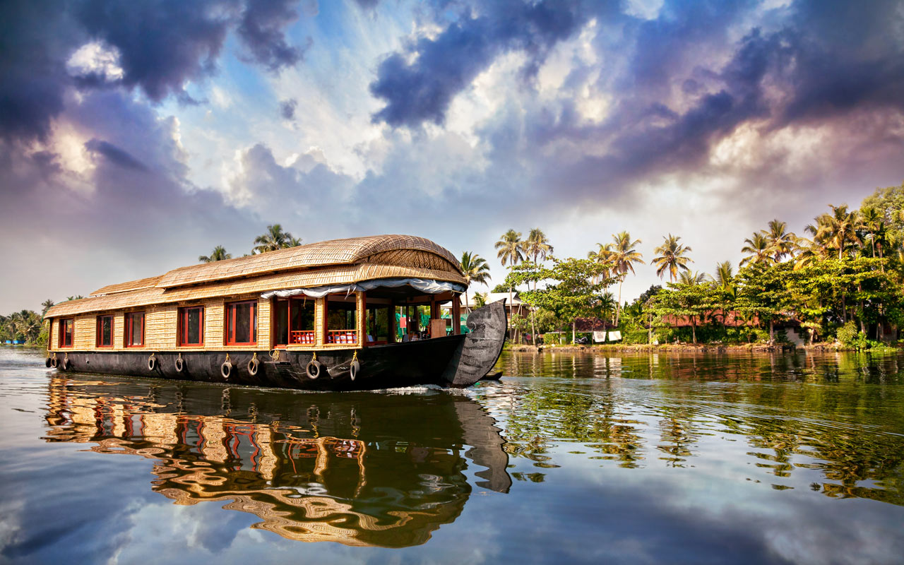

its all about thrilling water sports, seafood shacks, centuries-old monuments, spectacular Portuguese architecture, marvellously built cathedrals and churches, lively flea markets, serene sunsets and sunrises, and vibrant seaside clubs
Kerala is a state in southern India, bordering the Arabian Sea. It’s known for its palm-lined beaches and backwaters, a network of canals.its a beautiful exxperience to stay in boat house whole day and night.
